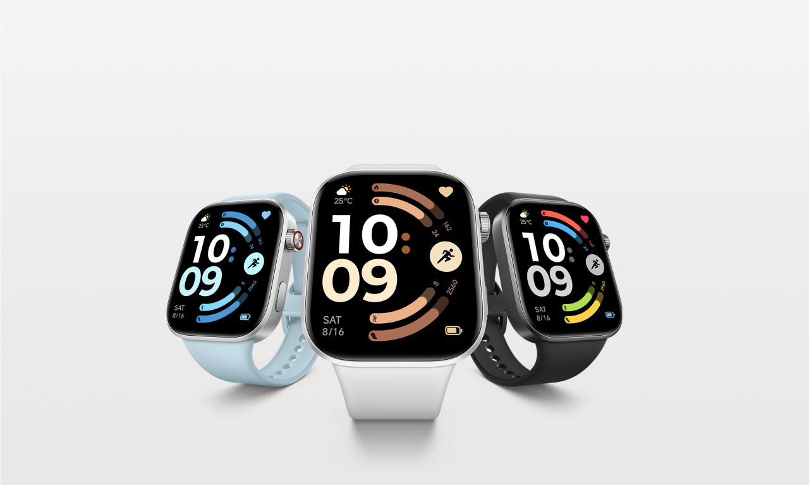
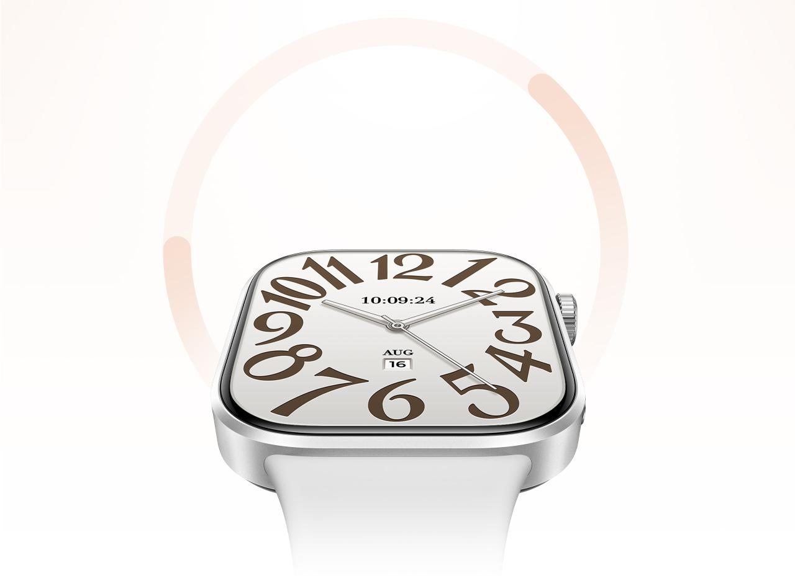
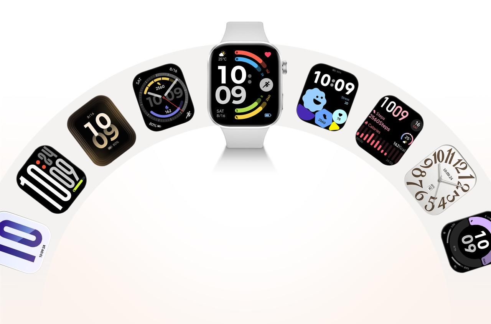
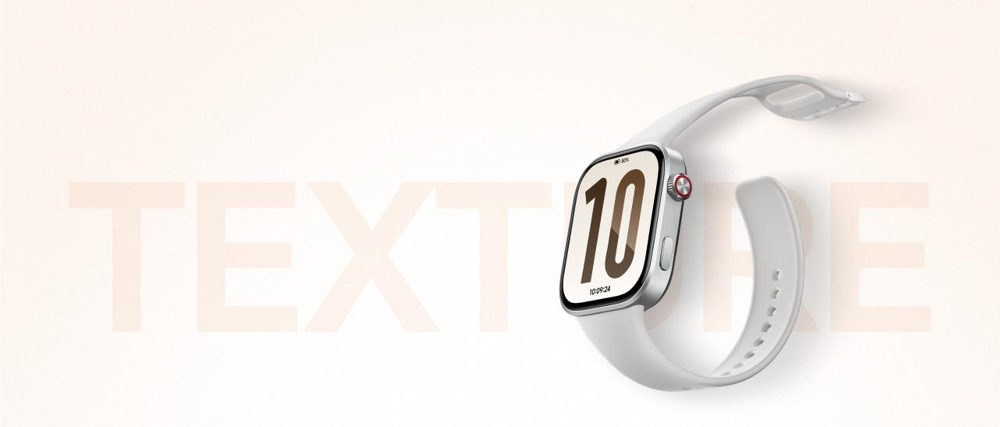

레드미 워치 6 스펙·가격 정리 — 13만 원대에서 되는 것과 안 되는 것
레드미 워치 6 가격이랑 스펙이 정확히 어떻게 되냐는 질문을 자주 받아요. 샤오미코리아가 2026년 7월 9일 국내에 정식 출시했어요. 권장소비자가는 13만 9,800원이에요.
이 가격대에서 확실히 되는 기능과 아직 확인 안 된 기능이 나뉘어요.

레드미 워치 6는 옵시디언 블랙·실버 그레이·글레이셔 블루 3가지 색상으로 나와요.
이미지 출처: 샤오미 공식 제품 페이지 — 레드미 워치 6 · 네이버 본문엔 받아서 재업로드 권장
가격·출시일은 어떻게 되나요
레드미 워치 6는 2026년 7월 9일 국내 정식 출시됐고, 권장소비자가는 13만 9,800원이에요.
국내 정식 출시일과 같은 7월 9일에 예약판매도 함께 시작해 12일까지 진행됐어요. 채널에 따라 예약 접수와 실제 배송이 시작되는 시점은 다를 수 있으니, 배송 일정은 구매하실 판매 페이지에서 확인해 주세요. 판매 채널은 아래처럼 나뉘어요.
| 항목 | 내용 |
|---|---|
| 국내 정식 출시일 | 2026년 7월 9일 |
| 예약판매 기간 | 2026년 7월 9일~12일 |
| 권장소비자가 | 13만 9,800원 |
| 판매 채널 | 샤오미 공식 온오프라인 스토어 우선 오픈, 쿠팡·네이버 브랜드스토어 순차 확대 예정 |
채널별 정확한 오픈 일정은 확인되지 않았어요.
디스플레이·두께 스펙은 어떤가요
레드미 워치 6는 52.58mm(2.07형) AMOLED 디스플레이에 두께 9.94mm예요.
2.07형은 화면 대각선 길이를 인치로 나타낸 크기예요. AMOLED는 화소 하나하나가 스스로 빛을 내는 방식이라, 어두운 화면에서 전력을 아낄 수 있어요.
2mm 초슬림 대칭 베젤을 둘러서 화면 대 본체 비율이 82%까지 올라갔어요. 최대 밝기는 2000니트, 주사율은 60Hz예요. 덕분에 햇빛이 강한 야외에서도 화면이 잘 보여요.
| 항목 | 스펙 |
|---|---|
| 디스플레이 | 52.58mm(2.07형) AMOLED |
| 베젤 | 2mm 초슬림 대칭 베젤 |
| 화면 대 본체 비율 | 82% |
| 최대 밝기 | 2000니트 |
| 주사율 | 60Hz |
| 화소 밀도 | 324PPI |
| 두께 | 9.94mm |
해상도는 432×514, 화소 밀도는 324PPI예요. PPI는 화면 안에 픽셀이 얼마나 촘촘히 박혀 있는지 나타내는 단위로, 숫자가 높을수록 화면이 또렷하게 보여요.
화면을 계속 켜두는 컬러 AOD(Always-On Display)도 지원해서, 손목을 안 돌려도 바로 시간을 볼 수 있어요.

테두리가 얇아서 같은 본체에서도 화면이 넓게 보여요.
이미지 출처: 샤오미 공식 제품 페이지 — 레드미 워치 6 · 네이버 본문엔 받아서 재업로드 권장
배터리는 실제로 며칠 가나요
배터리는 550mAh, 가벼운 사용 기준으로는 최대 24일까지 가요.
일반 사용 기준이면 최대 12일, 고강도로 쓰면 최대 7일이에요.
| 사용 강도 | 최대 사용 기간 |
|---|---|
| 가벼운 사용 | 24일 |
| 일반 사용 | 12일 |
| 고강도 사용 | 7일 |
이 3단계 수치는 제조사 자체 테스트 기준 수치예요.
스마트워치는 보통 며칠 단위로 충전 주기를 잡는 경우가 많은데, 레드미 워치 6는 가벼운 사용 기준으로 쓰면 그중에서도 넉넉한 편이에요.
위성항법(GNSS)은 어떻게 표기되나요
레드미 워치 6의 위성항법은 L1 대역 안테나 두 개에 5개 위성 시스템(GPS·글로나스·갈릴레오·바이두·QZSS) 조합이에요.
GNSS는 위성으로 위치를 확인하는 시스템을 통틀어 부르는 말이에요. QZSS는 일본이 운영하는 위성항법 보정 시스템이에요.
공식 소개에도 업그레이드된 듀얼 L1 안테나가 착용 상태에 맞춰 신호가 더 강한 쪽을 자동으로 고른다고 설명돼 있어요. (샤오미 공식 홈페이지, 2026.07 기준)
L1은 위성 신호 대역 이름이에요. 안테나는 두 개를 두고 착용 방향에 따라 신호가 더 강한 쪽을 골라 써요. 주파수 대역 두 개를 지원한다는 뜻은 아니에요.
달리기나 등산처럼 이동 중 위치를 계속 기록하는 운동을 할 때 특히 도움이 되는 기능이에요. 다만 지하나 실내 깊숙한 곳은 신호가 안 잡혀 한계가 있어요.
색상·호환 기기·건강 기능은 뭐가 있나요
색상은 옵시디언 블랙·실버 그레이·글레이셔 블루 3종이고, 아이폰(iOS)·안드로이드 모두에서 쓸 수 있어요.
- 심박수: PPG 센서(빛으로 혈류량 변화를 재는 방식이에요)로 측정해요.
- 혈중 산소(SpO2): 측정 기능을 지원해요. 수면 중 호흡 상태 파악에 참고가 돼요.
- 기기 호환: 안드로이드 8.0 이상, iOS 14.0 이상에서 연결돼요.
스포츠 모드는 150가지 넘게 지원해서 달리기·수영·요가처럼 자주 하는 운동은 대부분 기록할 수 있어요. 저장공간은 512MB예요.
이런 건강 관리 센서는 최근 보급형 스마트워치에도 흔히 들어가는 편이에요. 다만 의료기기 수준의 정밀 측정은 아니라서, 참고용으로 보시면 좋아요.
수면·스트레스 24시간 모니터링과 호흡 운동 가이드, 심박수 이상 감지 알림도 지원해요. 왼손이나 오른손 어느 쪽에 차도 워치 페이스 방향이 자동으로 바뀌어요.

워치 페이스마다 걸음 수·심박·스트레스처럼 보여 주는 정보가 달라요.
이미지 출처: 샤오미 공식 제품 페이지 — 레드미 워치 6 · 네이버 본문엔 받아서 재업로드 권장
크기랑 무게는 어느 정도인가요
레드미 워치 6는 46.45×40.03×9.94mm 크기에 무게는 약 31g, 프레임은 알루미늄 소재예요.
이전 세대인 레드미 워치 5보다 1.4mm 더 슬림해졌어요. 무게도 31g이라 같은 가격대 스마트워치 중에서는 가벼운 편에 속해요.

알루미늄 프레임에 옆면 버튼과 크라운이 함께 달려 있어요.
이미지 출처: 샤오미 공식 제품 페이지 — 레드미 워치 6 · 네이버 본문엔 받아서 재업로드 권장
전작인 레드미 워치 5와 비교하면 달라진 점이 몇 가지 있어요. 무게는 33.5g에서 31g으로 2.5g 가벼워졌고, 저장공간은 164MB에서 512MB로 크게 늘었어요. 덕분에 오프라인 음악이나 앱을 예전보다 여유 있게 담아둘 수 있어요.
블루투스는 5.3에서 5.4로 올라갔어요. 버전이 오를수록 대체로 연결이 안정되고 배터리 소모도 줄어드는 경향이 있어요. 다만 마이크는 2개에서 1개로 줄었는데, 통화 음질 면에서는 아쉬운 변화예요.
아이폰 호환 최소 버전도 iOS 12.0에서 14.0 이상으로 바뀌었어요. 오래된 아이폰을 쓰고 있다면 연결 전에 버전부터 확인해두는 게 좋아요.
배터리 지속일 표기 방식도 달라졌어요. 전작은 '일반적인 사용 시간 기준 24일'로 뭉뚱그려 표기했다면, 이번 세대는 가벼운 사용·일반 사용·고강도 사용 세 단계로 나눠 보여줘요. 세 단계로 나뉘니 자기 사용 습관에 맞는 수치를 더 쉽게 확인할 수 있어요.
정리하면 무게·저장공간·블루투스·아이폰 호환 최소 버전은 개선된 방향이고, 마이크 개수만 유일하게 줄어든 부분이에요.
보조 버튼을 길게 누르면 전원을 끄거나 다시 시작할 수 있어요. 세 번 누르면 등록해둔 긴급 연락처로 바로 전화를 걸 수도 있어요.
13만 원대에서 확인된 것과 확인 안 된 것은 뭔가요
디스플레이·배터리·GNSS·기기 호환·방수·블루투스 통화는 공식 사양표에 명시됐어요. NFC만 국내 사양표에서 확인이 안 됐고요. NFC는 기기를 태그해 근거리로 결제하는 통신 기능이에요.
결제·방수·통화는 실생활에서 자주 쓰는 기능이라, 사양표에 있는지 따로 짚어볼 필요가 있어요.
| 구분 | 항목 | 내용 |
|---|---|---|
| 확인됨 | 디스플레이 | 2000니트·화면 대 본체 비율 82% |
| 확인됨 | 배터리 | 가벼운 사용 기준 최대 24일 |
| 확인됨 | 위성항법 | L1 안테나 2개, 5시스템 GNSS |
| 확인됨 | 기기 호환 | 아이폰(iOS)·안드로이드 |
| 확인됨 | 방수 등급 | 5ATM(생활 방수) |
| 확인됨 | 블루투스 통화 | 지원(스피커·마이크 내장) |
| 확인 안 됨 | NFC·결제 | 국내 사양표에 없음 |
· 5ATM 방수 — 손 씻기·수영장 수영은 가능하지만, 뜨거운 샤워·사우나·스쿠버다이빙은 적합하지 않아요.
· 블루투스 통화 — 스피커·마이크가 있어 손목에서 통화할 수 있어요.
· NFC 결제 — 국내 모델 사양표엔 없어요. 글로벌엔 별도 NFC 모델이 있어요.
NFC 말고는 공식 사양표로 스펙이 대부분 확인돼요. 2026.07.24 기준으로 정리한 내용이에요.
자주 묻는 질문
Q. 레드미 워치 6가 5개 위성 시스템을 지원하는 게 왜 중요한가요?
건물 사이나 산길처럼 신호가 약한 곳에서도 위치를 더 안정적으로 잡을 수 있다는 뜻이에요.
Q. 채널별 구매 혜택은 어디서 확인하나요?
채널별 예약 혜택은 공식 제품 페이지에 나와 있지 않아 이 글에서는 확인하지 못했어요. 지금은 정식 판매 구간이라 채널마다 혜택이 또 다를 수 있으니, 구매 전 해당 판매 페이지에서 직접 확인하시는 게 정확해요.
Q. 글로벌 NFC 모델이랑 국내 모델은 뭐가 다른가요?
글로벌엔 NFC 결제를 지원하는 별도 모델이 있어요. 국내 사양표엔 NFC 언급이 없어서, 결제가 꼭 필요하면 구매 전 판매 페이지에서 확인하시는 게 안전해요.
✔ 같이 보면 좋아요
· 같은 스마트워치라도 프리미엄 쪽이 궁금하다면 갤럭시 워치9·워치 울트라2 변경점 총정리 — 배터리·다이빙·가격 비교 글도 참고해 보세요.
참고한 곳
· 샤오미 공식 제품 페이지 — 레드미 워치 6
하루 정리
· 레드미 워치 6는 2026.07.09 국내 출시, 가격은 13만 9,800원이에요.
· 디스플레이 2000니트·82% 화면비, 배터리는 가벼운 사용 기준 최대 24일까지 가요.
· 위성항법은 L1 안테나 2개로 5개 시스템을 지원하고, 방수(5ATM)·블루투스 통화도 확인돼요.
· 크기는 46.45×40.03×9.94mm·약 31g으로 전작보다 1.4mm 더 슬림해졌어요.
NFC만 국내 사양표에서 확인 안 됐어요. 결제가 꼭 필요하면 구매 전 판매 페이지를 한 번 더 확인해 보세요.